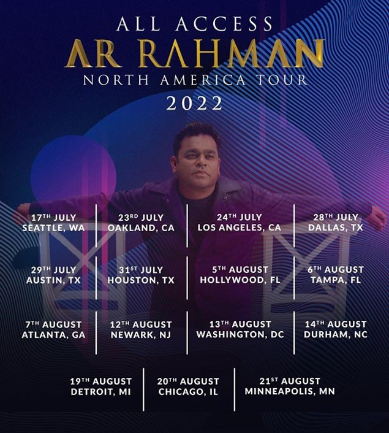
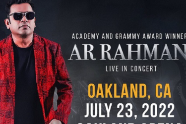

BE READY TO POP!!
Any mood, any occasion
He said “I’ll be there for you” and he did!
Aren't we all grateful for the countless hours spent on listening to his music therapy?
Yuvan Shankar Raja, The biggest South Indian music director will be performing his concert in Chennai after 11 long awaited years.
Anirudh Ravichander, Tamil Nadu’s very own rockstar, whose viral tunes have taken the film industry by a storm, is now here with his first ever concert tour in India. The tour marks his milestone of completing 10 years of creating sensational music for films. This will be a two concert tour in Coimbatore and Chennai. Book your tickets now and get ready for a rocking musical experience with Anirudh!


A.R Rhamna has been a successful music producer and composer in India for a very long time; but, like most people, I only became exposed to his music through his composition for the movie Slumdog Millionaire. The very same composition and production that won him two grammy’s for Best Compilation Soundtrack album and Best Song Written for Visual Media. On top of all his production success for films, he is also a live performer, and following the success of Slumdog Millionaire, he traveled the world to do his live performances.
His Los Angeles show was at the Hollywood Bowl, which happen to be a great setting for his music. In the middle of July the summer night was perfect, slightly crisp but warm enough to be completely comfortable.